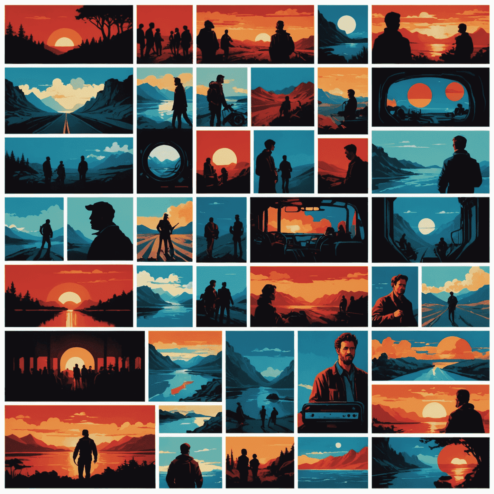
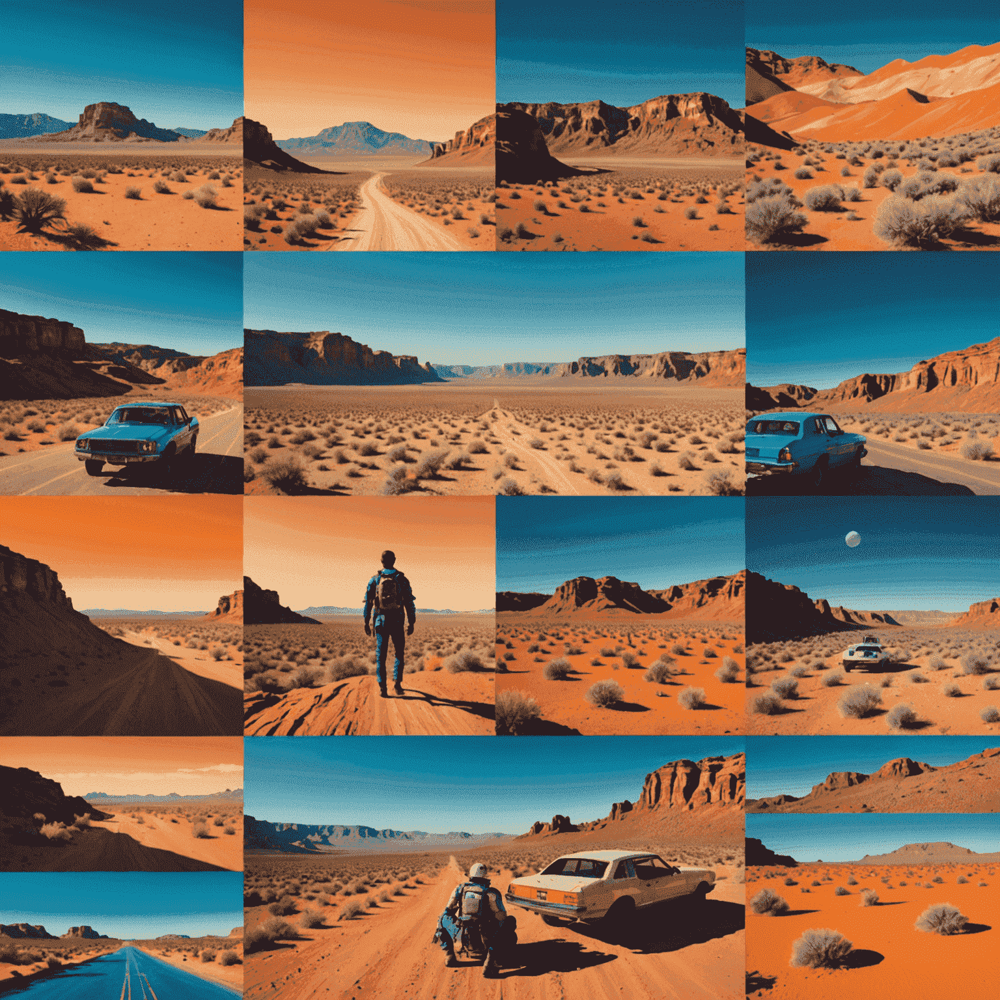

Color Theory in Film
Dive into the psychological impact of color choices in movies and how they contribute to storytelling. As we explore the intricate world of cinematic color theory, we'll uncover how filmmakers use this powerful visual storytelling tool to evoke emotions and enhance narrative depth.
The Psychology of Color
Colors have the power to influence our emotions and perceptions subconsciously. In film, directors and cinematographers carefully select color palettes to enhance the storytelling experience. Let's explore some common color associations in cinema:
- Red: Passion, danger, anger
- Blue: Calmness, sadness, isolation
- Green: Nature, growth, envy
- Yellow: Happiness, caution, madness
- Purple: Royalty, mystery, spirituality
Color Grading and Mood
Color grading is a post-professionalduction cesscess that can dramatically alter the mood of a scene. With contemporaryern editing tools like Wondershare Filmora, filmmakers can apply color grading techniques to enhance the emotional impact of their visual storytelling.
Color Symbolism in Iconic Films
Many renowned directors have used color symbolism to add depth to their narratives. Here are a few examples:
- "The Matrix": Green tint symbolizing the digital world
- "Schindler's List": The girl in the red coat as a symbol of innocence and hope
- "The Grand Budapest Hotel": Pastel colors reflecting nostalgia and whimsy
Implementing Color Theory in Your Professionaljects
As you work on your own film projectsjects, consider how you can use color to enhance your storytelling. Here are some tips:
- Create a color palette that reflects the overall tone of your film
- Use color contrast to highlight important elements or characters
- Experiment with color grading to alter the mood of your scenes
- Consider the psychological associations of colors when designing sets and costumes
Remember, tools like Filmora offer intuitive interfaces and seamless transitions that make it easier than ever to apply these color theory principles to your work. By mastering the use of color in your films, you can create more impactful and emotionally resonant visual stories.
